Yuva PanajiDesigned and built · 13 min read
One sign-up, carried all the way to the registration desk.
I designed and built the website for Yuva, a youth service group in Goa. The public side lists events and takes sign-ups. The private side helps the committee check payments, print the desk list and run its membership drive.
- Role
- Design and build, solo
- For
- Yuva, a youth social service organisation in Panaji, Goa, founded in 2012
- Platform
- Web: a public site and a private admin portal
- Timeline
- July to November 2026
- Status
- Live, on the organisation's own hosting and database. No usage numbers to share
- Stack
- Next.js 16, React 19, Supabase, Netlify

In short
- The problem: an event sign-up is only the start. The committee still has to check payments, fix mistakes, run a desk on the day, keep the accounts and report afterwards.
- What I built: one site with a public front and a private back office. Each event gets its own form, and every sign-up flows into a list, a printed desk sheet and an Excel file.
- The key idea: keep it one record from the form to the desk. Nobody types a sign-up out again.
- Where it stands: live and run on the organisation's own accounts. I have no counts of events or sign-ups to share, because those sit with members' details.
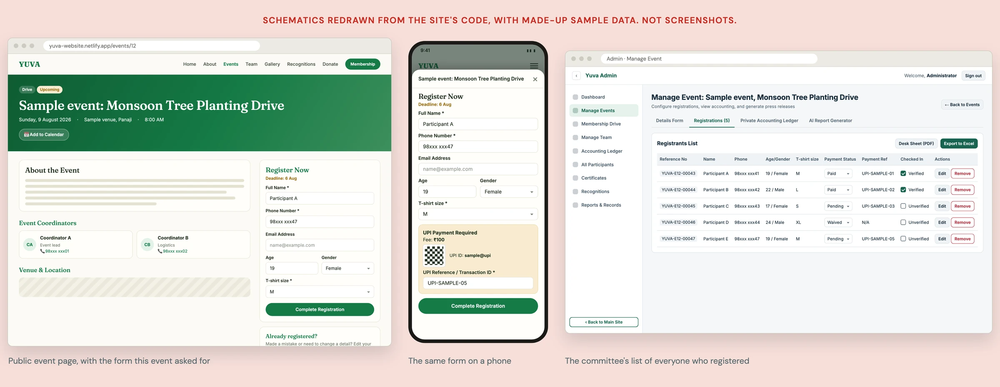
01 Why I built it
A sign-up keeps creating work after the button is pressed
Yuva is a youth social service group in Panaji, Goa. It runs drives, camps, cultural events and sports, and it recruits new members once a year.
From the outside, an event needs a page and a form. Inside the committee, each sign-up starts a chain of jobs. Someone checks the fee was paid. Someone fixes a wrong name. Someone stands at a desk on the day with a list. Someone keeps the accounts and writes up the event afterwards.
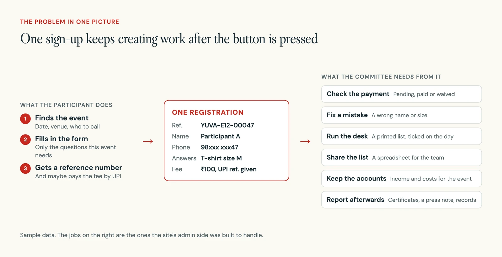
So I set myself one rule. A sign-up is entered once, by the person signing up. Every list, sheet and file after that is made from the same record.
02 How it works
A public front, a private back office and a few pages made for paper
The site has three parts. Anyone can browse the public pages, register for an event and apply in a membership drive. The committee works in an admin portal behind one shared login. A few plain pages are made to be printed, such as the attendance sheet for the desk.
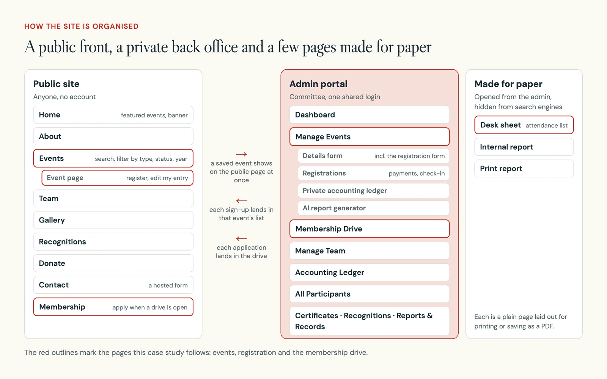
There are no accounts for the public. A person who registered is known only by the phone number they gave. That one choice shaped a lot of what follows.
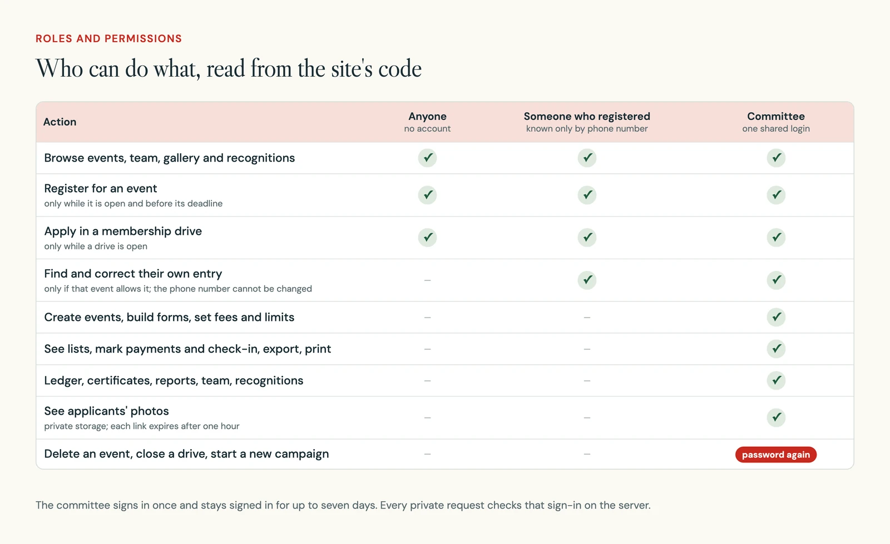
03 Decision 1
Each event asks only what it needs
What you see: a form builder inside each event. Name and phone are always asked. Email, age, gender and address can each be switched on or off and made required. Then the committee adds its own questions, such as a T-shirt size or a school name.
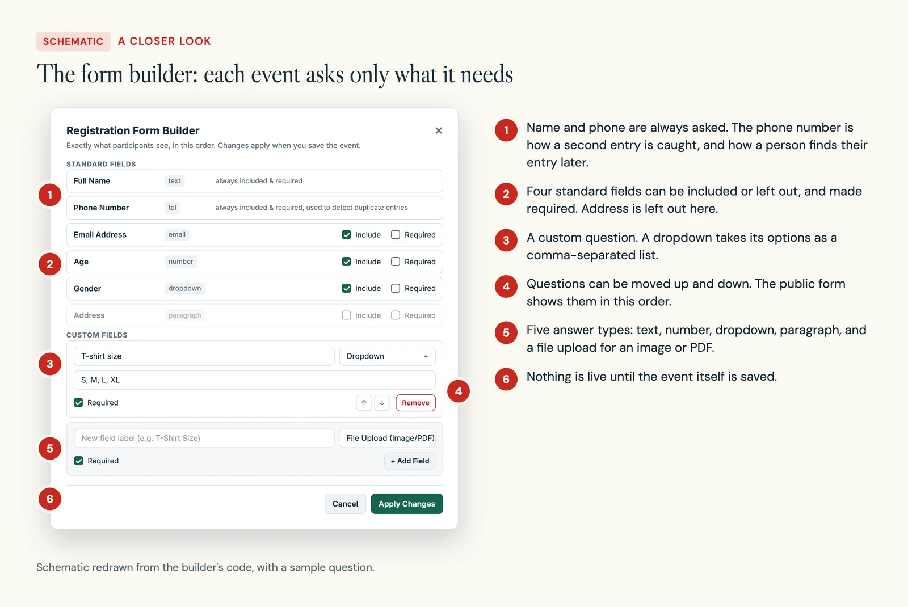
The public form then shows exactly those questions, in that order. On a phone the form sits far down the page, so a Register button stays at the bottom of the screen and opens the form as a sheet.
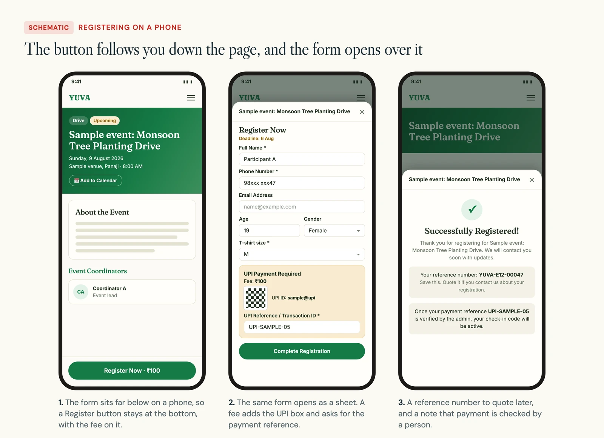
In the build: the database is reached through its web interface, which cannot add new columns. So each event's settings live as one hidden row in the same table that holds its questions. One shared function splits that row out before anything shows the form.
04 Decision 2
The sign-up becomes the list at the desk
What you see: after a sign-up, the person gets a reference such as YUVA-E12-00047. The committee sees them in that event's list, with a column for every answer. Payment is marked pending, paid or waived. A tick marks the entry verified.
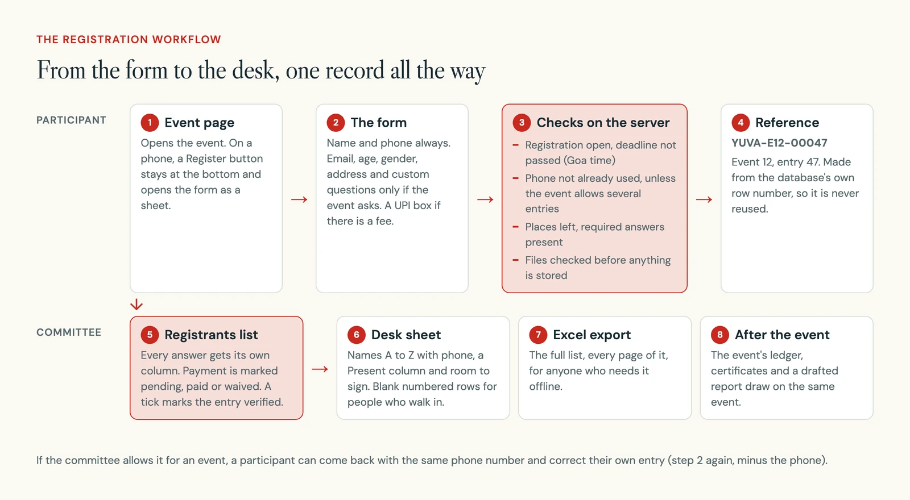
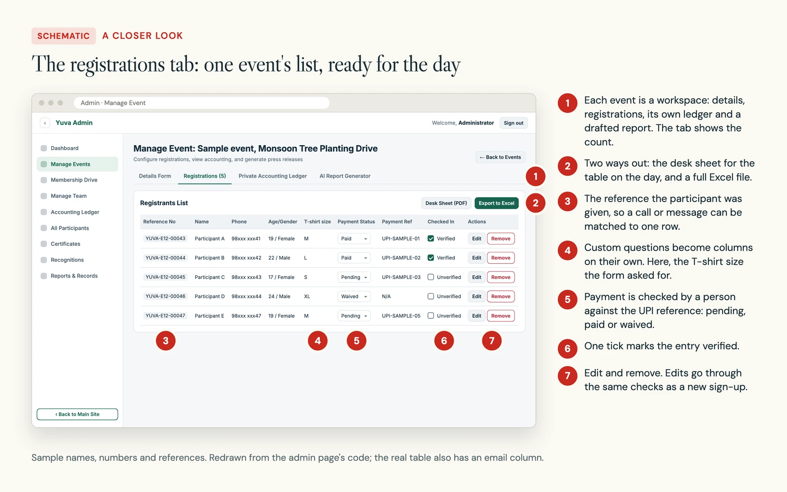
In the build: the reference number is made from the database's own row number, which is never reused. So no two people can share one, and nothing extra has to be stored.
The desk sheet is a separate page laid out for paper. The list is sorted A to Z and keeps only what the desk needs: name, phone, a Present column and room to sign. Blank numbered rows fill each page for people who walk in.
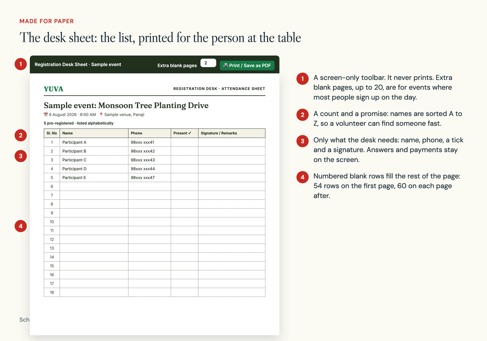
05 Decision 3
People fix their own mistakes, with the phone number as the key
What you see: if the committee allows it for an event, an "Already registered?" panel appears on the event page. You type the phone number you used, pick your entry, and correct it. The phone number itself cannot be changed.
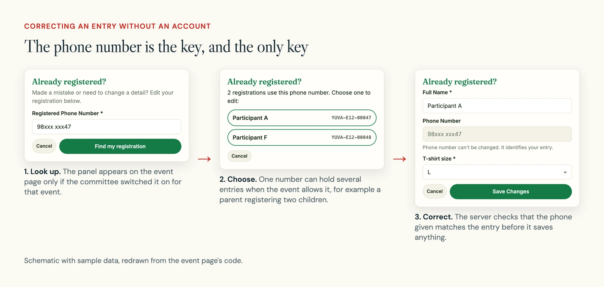
In the build: before saving, the server checks that the phone given matches the entry. During an audit in October I also changed the lookup to an exact match. Before that, a phone search could match more than one number.
06 Decision 4
The membership drive is built for a crowd on phones
What you see: once a year the committee opens a membership drive. A banner appears on the home page and the link is shared. People apply on their phones, get a receipt such as YUVA-M57, and wait for a call. It started as a volunteer drive and was renamed in October; the old links still lead to it.
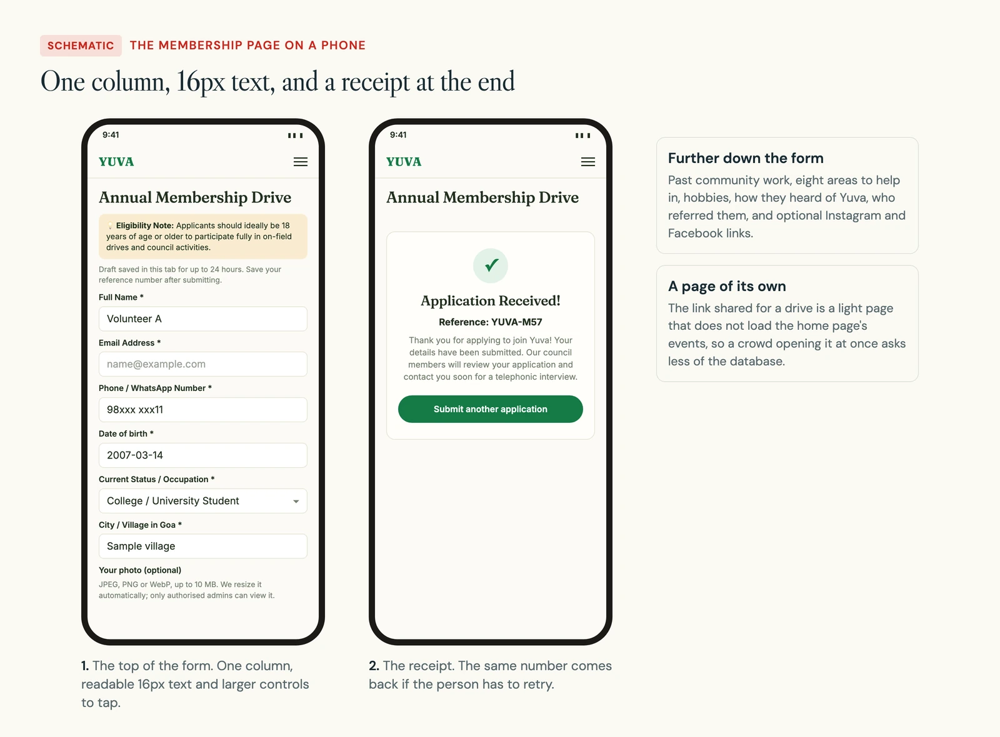
In the build: I planned for many people applying at once on weak signal. The answers are kept in the browser tab for up to 24 hours. Repeat taps are blocked. A retry with unchanged answers carries the same key, so a lost reply cannot make a second application, and the person gets the same receipt back.
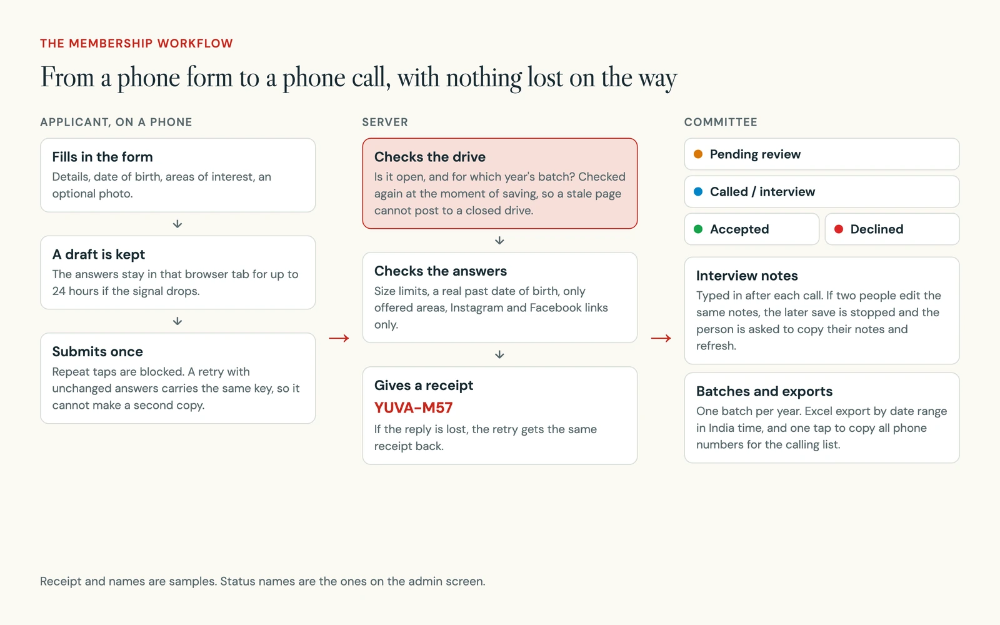
The photo was the hardest part. It is optional, but phone photos are large and the free storage plan is small. So the browser shrinks it before sending, and the server rebuilds it, strips location data and stores a small copy where only the committee can see it.
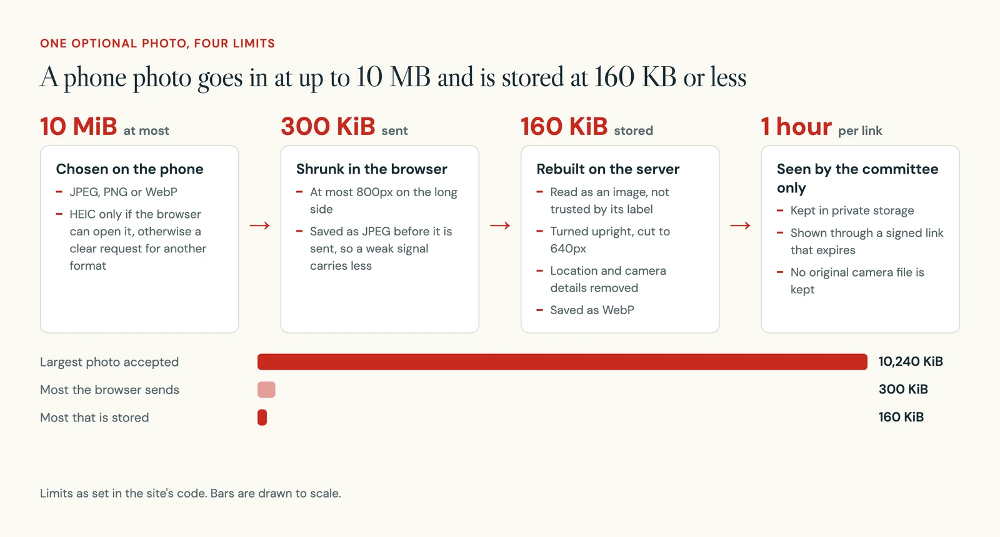
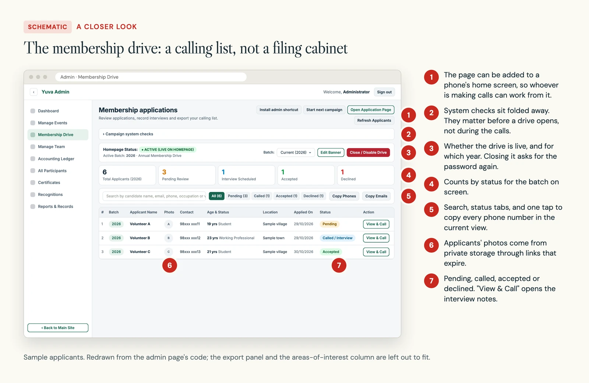
Isolated tests send 200 different applications at once and 50 retries of the same one, against a stand-in for the database.
07 Decision 5
The back office got its own plainer design
What you see: the admin portal no longer borrows the public site's look. It has one sans-serif type scale, neutral surfaces, green main buttons and red only for actions that delete.
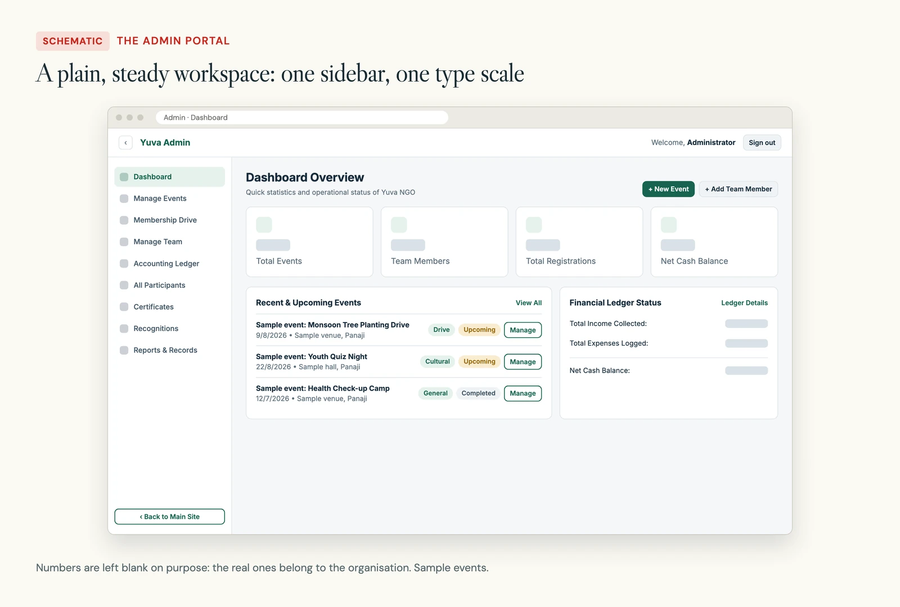
In the build: I listed what made the working screens hard to use, then fixed each one. The public site's editorial type was the first thing to go.
| Problem | What I changed |
|---|---|
| Decorative type, uppercase buttons and small labels made tables hard to scan | An admin-only stylesheet with one type scale and readable tables. Public pages are untouched |
| Mixed emoji icons. The phone menu could not be closed by tapping outside it | One icon set, the current page marked, and a phone menu that closes on a tap outside or Escape and keeps keyboard focus inside |
| A failed load looked like an empty list. No status filter, count or pages | An inline retry, a status filter, result counts, and pages of 25 events or 50 participants |
| A pop-up after every save blocked the next action | Notices that do not block. Delete confirmations stay |
| Login labels were not tied to their fields, and the show-password button could not be reached by keyboard | Both fixed |
08 The build
One Next.js app, and only the server talks to the database
The whole site is one Next.js app on Netlify. Public pages read from the database on each visit, so an edit in the admin shows at once with no rebuild. The browser never talks to the database directly.
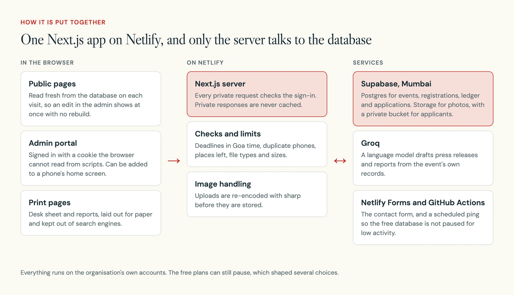
| Part | What I used |
|---|---|
| App | Next.js 16 with the App Router, React 19, Node 22 |
| Data and files | Supabase: Postgres and storage, in the Mumbai region |
| Sign-in | One committee login, a signed session cookie that scripts cannot read |
| Images | sharp, to re-encode uploads before they are stored |
| Exports | Excel files for lists and the ledger |
| Drafted reports | A language model on Groq drafts press releases and reports from an event's records |
| Hosting | Netlify, deployed on every push to the main branch |
The site started in July as a static site edited through files. Within two weeks I moved it to a live database, because the admin portal needed to save changes as they happened.
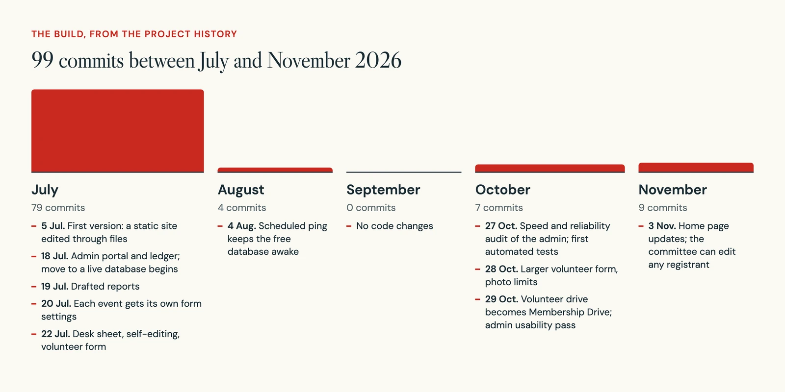
- 99
- commits, July to November 2026
- 3
- automated test suites, first added in October 2026
- 1,205
- made-up registrations one test runs against, to prove lists past 1,000 rows
- 200
- applications sent at once in an isolated test
In late October I audited the admin side for speed and reliability. Most of what I found was silent: numbers that looked right and were not.
| Area | Before | After |
|---|---|---|
| Dashboard | Four requests downloaded every event, team member, registration and ledger row. Counts could stop at 1,000 | One request with exact counts from the database |
| Long lists and exports | The database's default limit could hide every row after the first 1,000 | Read page by page in a fixed order |
| Money | Totals added up as decimals, which can drift | Totals kept in paise, as whole numbers |
| Registration | Phone lookups matched patterns. Deadlines closed at midnight UTC. Required custom answers were not checked on the server | Exact phone match, deadlines that include the whole day in Goa time, and required answers checked |
| Uploads | A file could be stored before the sign-up was checked, and images had no general size cap | Check first. Images up to 20 MB, PDFs up to 5 MB, and new files removed if the sign-up fails |
| Certificates | A slow reply for the last event could overwrite the attendees of the one just picked | Old requests are cancelled and late replies ignored |
09 Where it stands
Live on the organisation's own accounts, with no numbers to share
The site is live and runs on the organisation's own hosting, database and code accounts. Changes deploy when they are pushed to the main branch.
I have no counts of events, registrations or membership applications to report. They live in the organisation's database next to members' names and phone numbers, and I have not taken figures out of it for this page.
These are still open:
- The committee shares one login, so the site cannot tell who did what.
- Self-editing trusts the phone number, as described above.
- The audit's database script was not yet applied to the live database at the time of the audit.
- Real phone, keyboard and screen-reader checks of the admin are still to do.
10 What is next
Give people their own keys
- Separate logins for committee members, so actions can be traced to a person.
- A one-time code or a signed link for self-editing, instead of the phone number alone.
- Test the audit's database script on a copy of the database, including two people taking the last place at once, then apply it.
- A careful clean-up of stored images that nothing uses any more. Some old events share images, so blind deletion would break them.
- A real-device pass on phones, with a keyboard and a screen reader.
11 What I learned
The quiet limits were the dangerous ones
The worst bugs did not crash anything. A dashboard count that stops at 1,000 looks like a real number. A list that ends at the 1,000th row looks complete. I now check where a number comes from before I trust it on screen.
I also learned that free plans are a design brief. The photo limits, the folded system checks and the scheduled ping to keep the database awake all come from working inside them. And a site without accounts still needs a key for each person. The phone number was the simplest key, and the page above is honest about what it costs.
A PDF deck you can work with again.